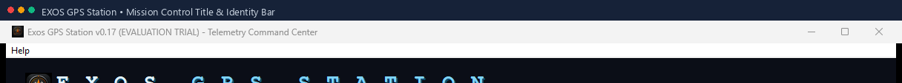
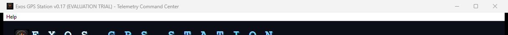

Space-Tech Title & Corporate Identity Bar
Top Application Banner • Full Width
MISSION CONTROL IDENTITY & COPYRIGHT
Space-Tech Title & Corporate Identity Bar
Top Application Banner • Full Width
The mission-control header at the very top of the window displaying the NASA-style spaced title 'E X O S G P S S T A T I O N', along with the official RITYM Technologies legal branding and exosgps.com link.
✦ Field Mission Deployment
You launch EXOS GPS Station on your Windows 11 laptop. The glowing blue header confirms that the application is running in registered mission-control mode with authentic digital signatures.
Technical Specifications & Architecture
- Rendered on dark obsidian canvas (#0b0e17) with dual-layer glow text in monospace Courier New bold.
- Integrates official satellite vector icon asset and dynamic title bar decoration with active license state.